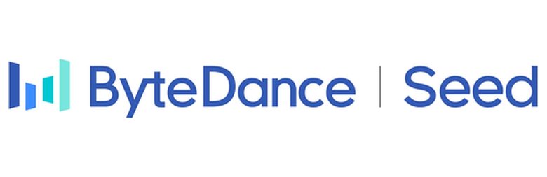

OpGuard

Catch LLM training bugs
at the first divergent op
OpGuard uses bitwise alignment to compare training runs at tensor boundaries, turning vague loss-curve anomalies into precise, actionable evidence.
Our key abstraction: bitwise alignment
Given the two training runs, view them as a sequence of “points”
Compare the tensors at each point. Must match bit by bit.
First mismatch point becomes a very clean pivot for debugging.
Global Alignment Trace
Inspect a real production debugging session. The first divergent operation marks where the bug begins — click any op to inspect tensor-level diffs and jump to source.
OpGuard Workflow
Determinism control → preflight → guarded replay → offline alignment. Watch the build-up one step at a time.
1 Determinism Control
2 Preflight: (~ 5 iters) Discover Stable Op
3 Guarded Replay: Fingerprint at Op boundary
4 Offline Alignment
Days of debugging, reduced to minutes
Deployed at ByteDance, OpGuard diagnosed kernel races, framework mismatches, and hardware-level corruptions that existing checks missed — including a five-day embedding backward race localized in under five minutes.
Production bug cases: manual root-cause time vs OpGuard (log scale). OpGuard stays at or under the 30-minute line.
OpGuard changes ByteDance’s internal debugging workflow in production training
- Manually compare two runs
- Guess which subsystem to check
Then inspect with the visualizer — tensor diffs, call stack, and source at the pivot.
Bitwise alignment enables broader comparisons
No “golden baseline” required
Compare equivalent computation across stacks, configs, and commits — pick whatever reference run is available for the bug.
Where are reference runs selected?
- Self-replay 45%
- Config tweak 25%
- Cross-framework 20%
- Stable commit 10%
Expert testimony
We had been chasing the wrong subsystem for almost a week. OpGuard showed the exact kernel in under fifteen minutes.
Without OpGuard, we would never have noticed that the drift originated in a single row race. The loss precision is too low and gives us no clue where to start.
Diverse and tricky root causes
20 Production Cases by Root-cause Categories
(35%) 5 cases
(25%) 6 cases
(30%) 2 cases
(10%)
OpGuard supports major production-level training stacks
Internal: text and VLM pre-training, post-training framework
Open source: Megatron-LM, DeepSpeed, GPT-Neox, veRL, etc.
Cite our paper
OpGuard will appear at OSDI ’26. If you use OpGuard in your research or systems work, please cite the following paper.
@inproceedings{OpGuard2026OSDI,
author = {Zhou, Ziming and Zhao, Yinjie and Zhu, Hang and Wang, Wenxiao and Bai, Zhihao and Zhang, Yun and Wang, Shuguang and Lin, Haibin and Huang, Peng},
title = {{OpGuard}: Bitwise Alignment for Precise and General Debugging of Production {LLM} Training},
booktitle = {Proceedings of the 20th USENIX Symposium on Operating Systems Design and Implementation},
series = {OSDI '26},
month = {July},
year = {2026},
address = {Seattle, WA, USA},
publisher = {USENIX Association},
}